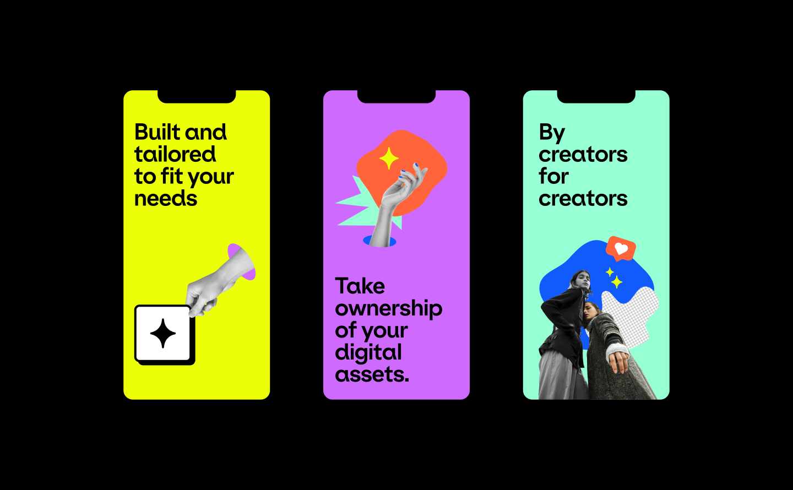
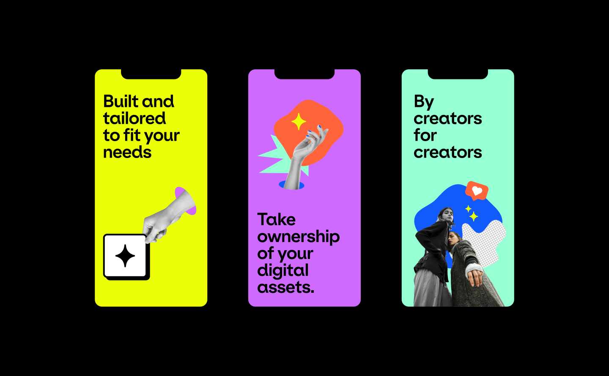
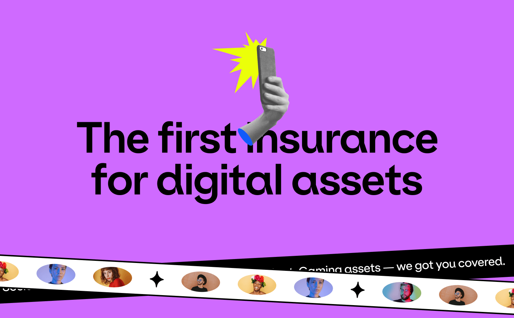
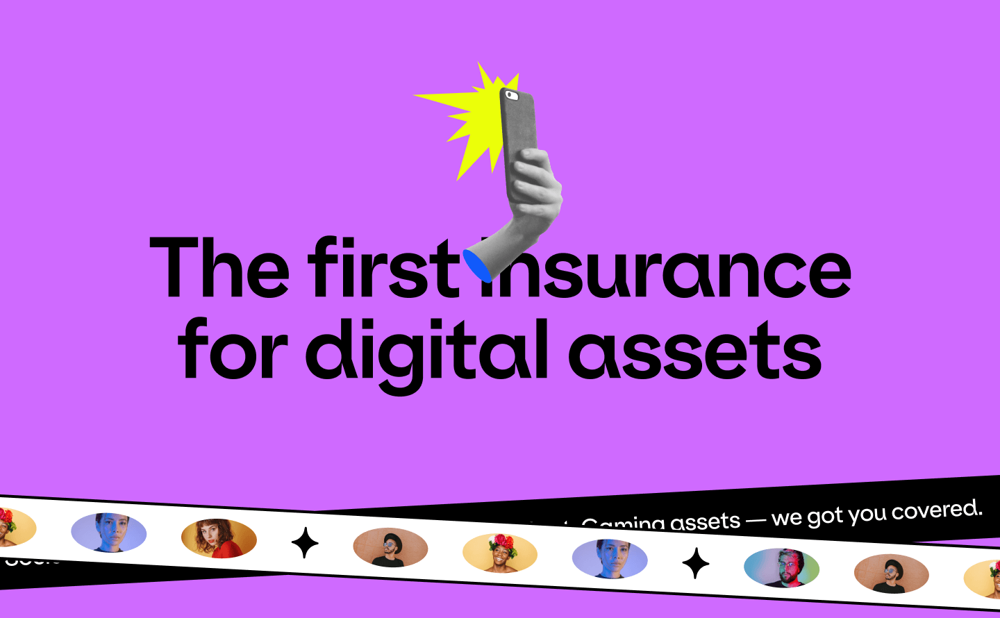
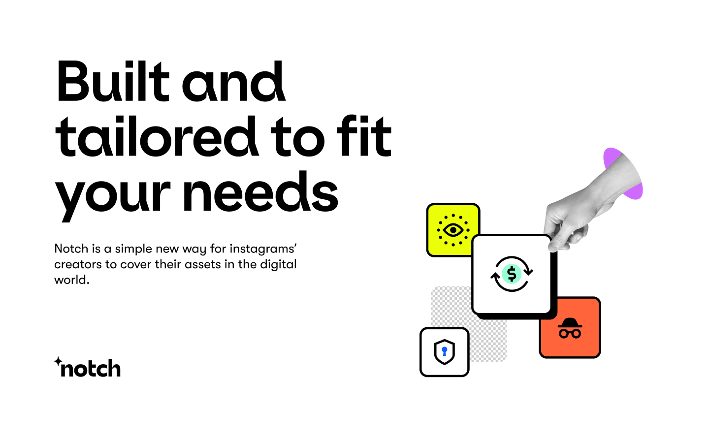
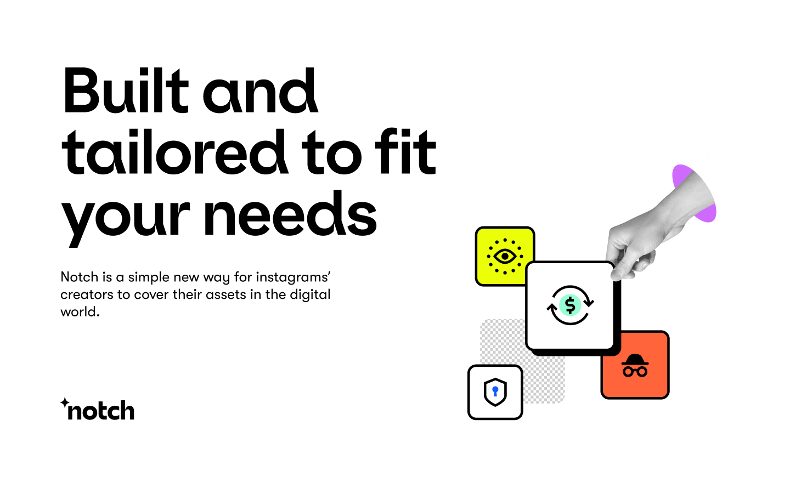

Notch A 10-day brand sprint for Notch. Notch provides tailored insurance
for digital businesses - affordable, fast, and specific to their needs.
Notch covers the most critical components to keep the business running.
Client | Notch
Art Direction | Studio Under
Strategic
Director | Ori Luzia
Brand lead designer | Anastasia Vlasenko
Brand designer | Ketrin Holub

 

 



 
